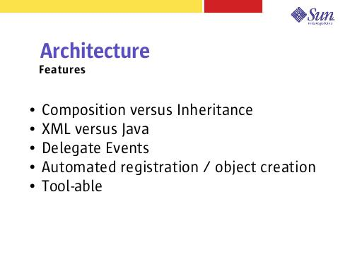

Notes:
By using composition versus inheritance, events and view components can be aggregated together without needing to assume all the functionality of a base class. You can take what you want, leave what you don't. Much more maintainable.
By pushing the View structure into a text format (XML), the View hierarchy is more flexible and more visible. It is self documenting and toolable. Changes can be made without needing to recompile.
We have removed the need for a ViewBean class per page. However, this is traditionally where event code exists. We instead delegate the handling of this code to “handlers” that are declared in the XML. These handlers are VERY easy to re-use across ViewBeans.
The framework takes care of much of the “busy work” and does so in a consistent, well mannered way.
As mentioned earlier, the XML format lends itself well to tools. Also, we have provided features in our DTD that can assist tools. For example, we declare all the input and output parameters to handlers. We also provide a description attribute on most of the elements for documentation.